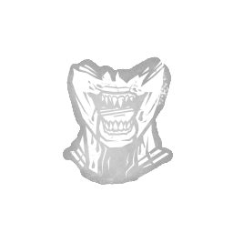

咒术：吞噬希望 Hex: Devour Hope
所属：女巫（杀手）
| 等级 | 档位 1 | 档位 2 | 档位 3 |
|---|---|---|---|
| 数值 | 3 4 | 4 | 5 |
描述
一项扎根于希望的厄咒。逃生者虚假的希望点燃了你的饥饿。 厄咒：吞噬希望 点亮一座厄咒图腾 厄咒效果。每当有逃生者在距离你至少24米的位置被解救下钩时，厄咒：吞噬希望 获得 +1 个印记，最多可叠加至 5 个印记： - 拥有2个印记：钩住逃生者10秒后，你获得 3/4/5% 急速状态效果，持续10秒。 - 拥有3个印记：使所有逃生者受到危险状态效果影响。 - 拥有5个印记：解锁处决能力，允许你亲手杀死濒死状态的逃生者。 厄咒效果会持续生效，直至厄咒图腾被逃生者祝福或净化，从而在本局剩余时间内失效。 如果你不作为，他们的鲜血便会沾上你的双手。如果你拯救他们，她的饥饿便会增长。